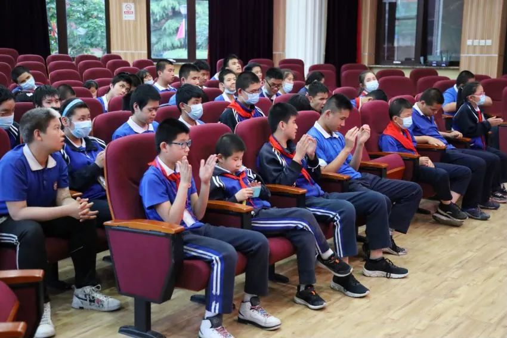
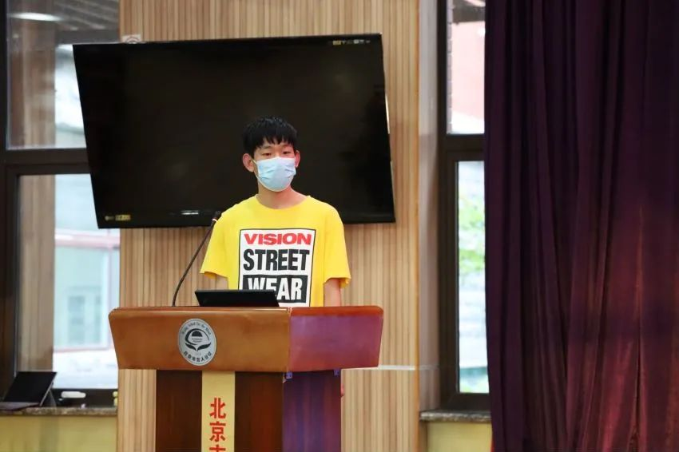
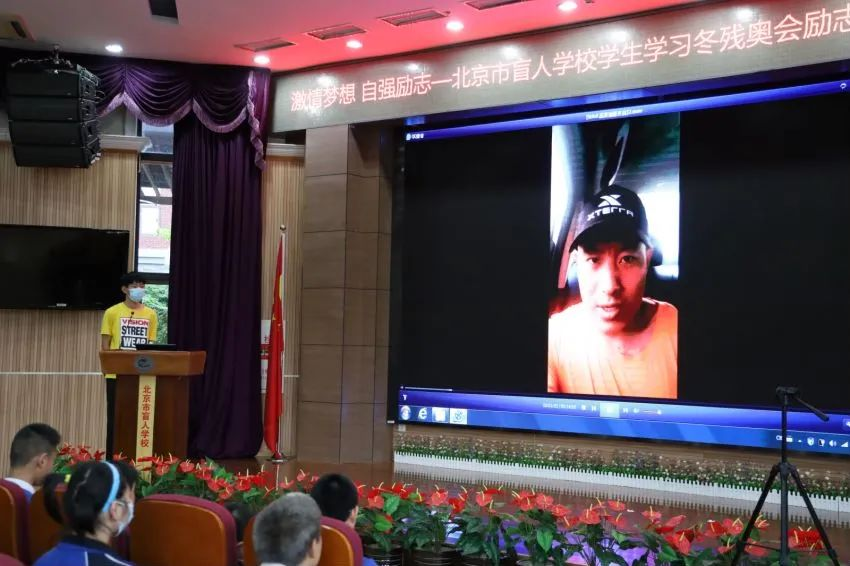
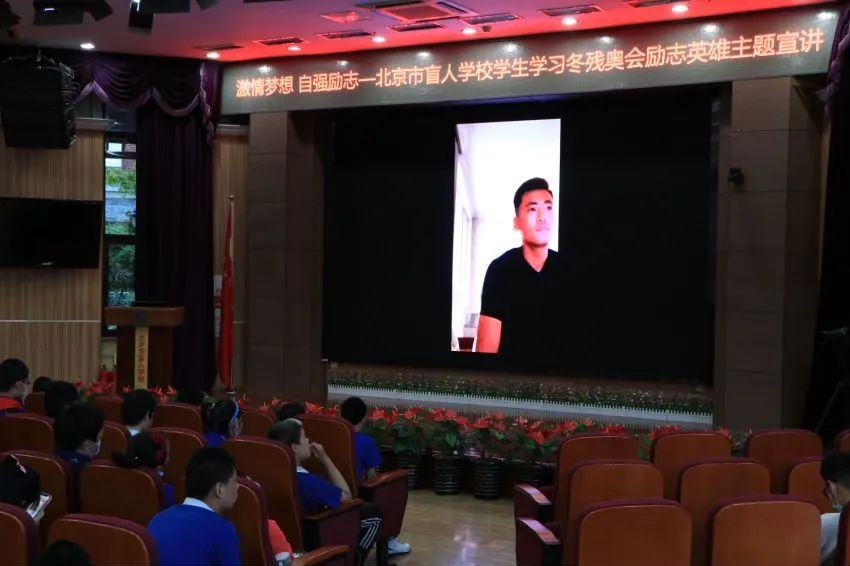
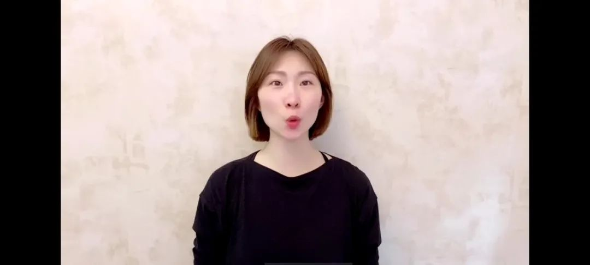

走进盲校，自强励志，激励盲校学生勇敢逐梦讲座活动
【来源】：爱心助童 | 2021-05-18
你每天还在为自己完不成的学习任务而抱怨吗？你还在因为遇到一点挫折就放弃坚持了吗？在这个世界上还有这样一群孩子，身体上有某些缺陷，无法像正常孩子一样生活的特殊儿童，他们更需要来自社会上其他人的关爱和鼓励，面对生活中的艰难和困苦。残疾不是某个人的错，他们只是我们中的不幸者，就像一颗根深叶茂的大树，风吹过，雨打过，总会有残损受伤的枝叶，但我们始终是同根同枝的兄弟姐妹，他们不应被我们轻视慢待，避而远之，而是应该给予他们更多的关系和理解，帮助他们克服自尊心，树立自信心，鼓励他们积极地面对生活。 2021年5月17日，由我们团队组织的北京盲人学校学生学习冬残奥会励志英雄主题讲座，在北京市盲人学校成功举办。

此次讲座过程： 首先，由我们的演讲成员向孩子们科普冬奥会的相关知识，面对演讲同学的提问，孩子们非常积极的回答，表达出很强烈的热情。

接下来，我们向孩子们介绍了即将参加东京残奥会铁人三项的唯一一名中国选手王家超老师。王家超老师在五岁的时候，隐高压电意外致残，失去左臂，但他没有因此一蹶不振，反而用一只手学会了游泳，在如此的逆风中，他从未后退过，因此他在12年中获得的103枚奖牌成为了必然的结果。孩子们在听到王家超老师的故事时，发出了由衷的赞叹和掌声，相信王家超老师的分享能给同学们带来很大的鼓励。

接着，我们向孩子们介绍了盲人足球队的守门员牛磊老师，牛磊老师是在队中唯一的“眼睛”，不仅需要负责观察足球场上的形势，还要提醒队友球的位置，对手的位置还有球门的位置，肩负着场上最大的责任。牛磊老师向同学们分享了在平时中队员们刻苦训练的过程，即使再累、再难，有再多的阻碍，这些盲人运动员都没有放弃，绝不会有半分偷懒，体现出顽强拼搏的奥运精神，同时牛磊老师也鼓励孩子们不要害怕困难和挫折，要勇敢追逐自己的梦想，虽然这条逐梦的道路很艰辛，但一定不要放弃！孩子们对这部分内容持有很高的热情，其中一部分孩子们也参加了学校的足球队，希望牛磊老师的分享对这群孩子们的未来能有所帮助。

最后，我们向孩子们介绍了花样滑冰运动员张丹老师。张丹老师从小便开始学习花样滑冰，1998年，年仅13岁的她便在世界青少年大赛获得了自己的首个冠军，她用自己的决心和努力逐步走向更高的舞台。当她在比赛中受伤后，在所有人都认定她会退出比赛时，她却再次跃动在冰面上，精彩的完成比赛，她的执着和拼搏诠释了奥运精神。张丹老师鼓励孩子们说“逐梦的路上没有人能一帆风顺，前路也许遍布荆棘，也许路面坎坷，但一定要坚强，勇敢面对挫折，不断超越自我，激起同学们热烈的反响。

这些孩子们在整个讲座过程中都十分认真的听讲，此次演讲也得到了孩子们的很多掌声和赞叹声，相信未来的他们也可以像各位老师那样的优秀，实现自己的梦想，发挥自己的价值！
浏览量：228

- 联系
我们

工作日：
早9:00-晚18:00
杨老师：
400-888-8888